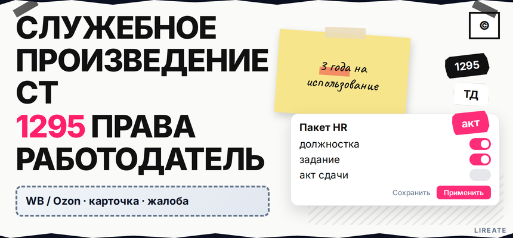

Штатный дизайнер сдал логотип, маркетолог выложил тексты, а юрист спрашивает: кому принадлежит результат и хватит ли фразы в трудовом договоре "все права компании"? Если макет создан в рамках трудовых обязанностей, чаще срабатывает ст. 1295 ГК РФ: исключительное право у работодателя, но только при правильных документах и сроках. Ниже вы пройдёте чек-лист: служебное ли это произведение, чем штат отличается от подрядчика, какой пакет собрать и не потерять права за три года молчания.

TL;DR / Быстрый инсайт: Служебное произведение создано в пределах трудовых обязанностей (п. 1 ст. 1295). Исключительное право по умолчанию у работодателя (п. 2), имя автора остаётся у сотрудника. За три года без использования, передачи или тайны право может вернуться автору. Ключ - должностка, задание и акт, а не формула "сделано в офисе".
Материал для собственника, HR и руководителя маркетинга на Лирейт. Нормы сверены на 09.11.2026; это не индивидуальная юридическая консультация. Подряд с внешним дизайнером разбираем в гайде L11; размер выплат автору - в материале L35.
Служебное произведение в бытовом смысле - не "всё, что сотрудник сделал в офисе", а то, что входило в его трудовые обязанности по договору и должностной инструкции (п. 1 ст. 1295). Логотип по личной инициативе директора, тексты "мимо KPI" или макет в выходной без задания работодателя могут не быть служебными - тогда нужен отдельный договор об отчуждении, как у фрилансера.
Делайте: для каждого файла зафиксируйте, кто поставил задачу, была ли она в должностке и есть ли служебное задание. Не делайте: считать, что должность "дизайнер" автоматически переводит любой рисунок в собственность компании.
| Ситуация | Норма ГК РФ | Исключительное право по умолчанию | Что оформить |
|---|---|---|---|
| Штат, задача в обязанностях | ст. 1295 | Работодатель (п. 2) | ТД, должностка, задание, акт приёма |
| Фрилансер, самозанятый, ИП | ст. 1288, ст. 1234 | Автор, пока нет отчуждения | Авторский заказ, акт, передача исходников |
| Сотрудник вне должности | Не 1295 по умолчанию | У автора | Договор отчуждения / заказ |
| В ТД право закреплено за сотрудником | п. 3 ст. 1295 | У автора | Лицензия работодателю + вознаграждение |
Итог: оплата зарплаты или счёта подрядчика не заменяет анализ режима. Штат без обязанности создавать контент - повод для отдельного договора с автором, а не надежда на формулу "он же у нас работает".
Делайте: до старта брендинга решите, штат это или внешний автор, и не смешивайте схемы в одном акте. Не делайте: копировать договор с фрилансером на сотрудника без блока о служебных произведениях.
Личные неимущественные права остаются у сотрудника, исключительное право - у работодателя (п. 1–2 ст. 1295); компания может обнародовать макет (п. 4). Оговорка в ТД о правах компании желательна, но не заменяет должностку (podpisal.ru). Статус директора не снимает проверку обязанностей (advokats.ru).
Логотип, тексты и макеты штатника проходят один тест: входило ли создание в обязанности. Свидетельство на товарный знак не заменяет право на графику. Делайте: закрыть авторское право до заявки в Роспатент. Не делайте: путать ст. 1295 с договором подрядчика.
Делайте: сдавать исходники вместе с финалом. Не делайте: полагаться на устное "он же дизайнер".
| Документ | Зачем | Риск, если нет |
|---|---|---|
| Трудовой договор | База трудовых отношений | Сложнее доказать служебный характер |
| Должностная инструкция | Творческие функции в обязанностях | Спор "не входило в работу" |
| Служебное задание | Конкретный макет или текст | Размытый предмет спора |
| Акт приёма-передачи | Дата предоставления в распоряжение | Спор о старте срока 3 лет |
Делайте: в акте перечислить файлы. Не делайте: принимать работу только в мессенджере без даты.
Если работодатель за три года с момента, когда произведение оказалось в его распоряжении, не начнёт использование, не передаст исключительное право третьему лицу и не сообщит автору о сохранении в тайне, исключительное право возвращается автору (абз. 2 п. 2 ст. 1295).
Три действия работодателя: разместить логотип на сайте или в брендбуке (использование) → оформить договор отчуждения с партнёром (передача) → письменно уведомить автора о режиме коммерческой тайны вместо публичного запуска.
Отсчёт - от сдачи макета, не от найма (п. 105 ПП ВС № 10). Делайте: напоминание в календаре за 30 месяцев. Не делайте: держать макет "в столе" без тайны.
Когда работодатель использует служебное произведение, передаёт право или сохраняет его в тайне в указанный срок, автор имеет право на вознаграждение; размер и порядок - по договору, иначе суд; это право неотчуждаемо (п. 2 ст. 1295). Судебная практика отделяет такую выплату от заработной платы (podpisal.ru).
Порядок выплат - в гайде L35. Делайте: отделить гонорар от оклада. Не делайте: маскировать 1295 одной строкой в ТД.
Оформите договор об отчуждении или авторский заказ, если сотрудник сделал логотип вне должности, принёс готовый вариант до трудоустройства или компания сомневается в служебном характере. Та же логика, что при работе с фрилансером: без письменной передачи исключительного права (ст. 1234) владельцем остаётся автор.
Типовой пакет договора с блоками о правах, исходниках и вознаграждении можно обсудить на странице авторского договора на Лирейт; для сценария с внешним дизайнером сверьте чек-лист в статье L11.
Делайте: подписывать отчуждение до публичного запуска бренда. Не делайте: надеяться на ст. 1295, если в должностке нет ни слова о дизайне.
Соберите папку: ТД, должностка, акты, календарь трёх лет. Для пограничных кейсов - авторский договор на Лирейт; выплаты - L35, подряд - L11.
Материал проверен: эксперт Елена Ковалева (главный эксперт по SEO/GEO), редакция Лирейт.
Достоверность данных: нормы ст. 1255, 1295 ГК РФ сверены с публикациями КонсультантПлюс и ГАРАНТ на 09.11.2026; показы Яндекс Вордстат в среде подготовки материала не запрашивались.
Работодатель, если логотип создан в пределах трудовых обязанностей и договор не закрепил право за автором (п. 2 ст. 1295). При отсутствии обязанности создавать знаки оформите отчуждение так же, как с подрядчиком.
Фраза снижает риск спора, но не заменяет доказательство, что работа входила в обязанности, и не отменяет право автора на вознаграждение при использовании (п. 2 ст. 1295). Дополните должносткой, заданием и актом.
Штат по ст. 1295: исключительное право у работодателя при выполнении трудовых обязанностей. Фрилансер по ст. 1288 и 1234: право у автора, пока нет договора об отчуждении. Смешивать схемы в одном акте нельзя.
Да, если хотите зафиксировать дату предоставления макета в распоряжение компании - от неё считается трёхлетний срок (podpisal.ru). Без акта сложнее доказывать момент старта срока в споре.
Исключительное право может вернуться автору, если не было использования, передачи права третьему лицу или уведомления о сохранении в тайне (абз. 2 п. 2 ст. 1295). Запустите публикацию, передачу или режим тайны до истечения срока.
При наступлении триггера использования, передачи или тайны автор имеет право на вознаграждение отдельно от оклада; размер - по договору или суду (п. 2 ст. 1295). Детали выплат - в гайде L35.